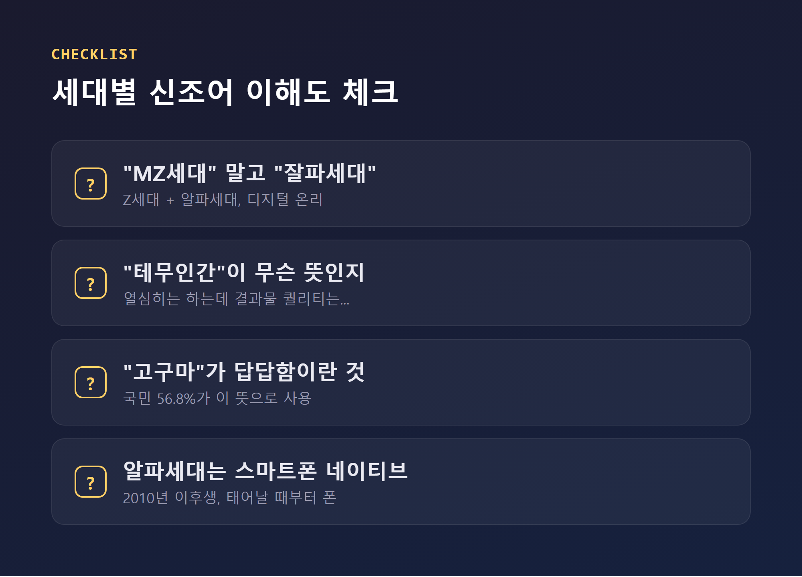
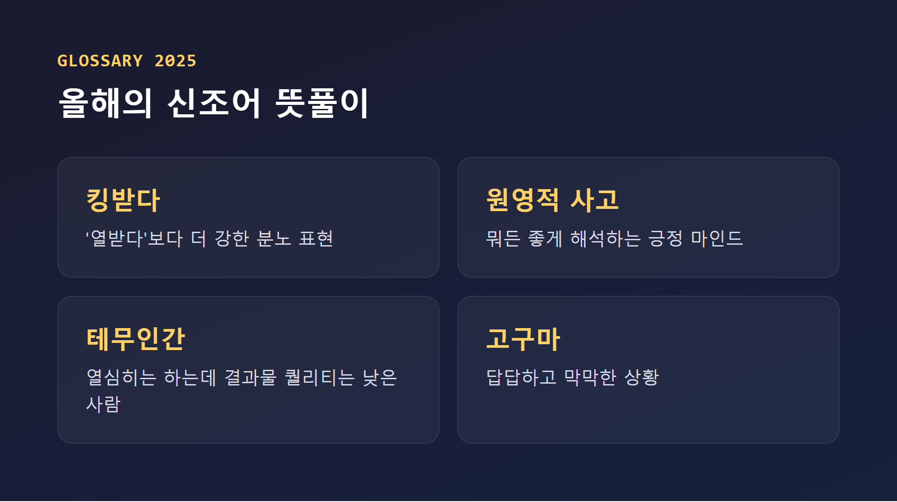
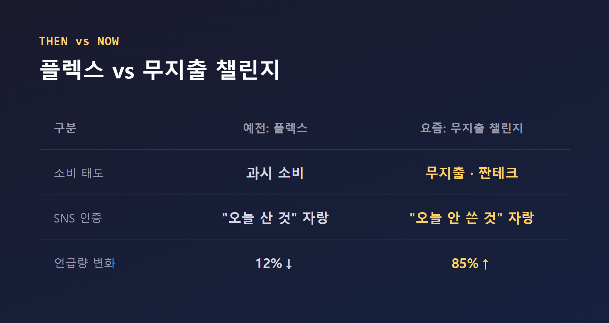

50대 초반 꼰대가 몰라서 식은땀 흘린 트렌드 5가지
안녕하세요, 어제도 조카가 하는 말을 70%쯤 못 알아들은 여러분의 친구입니다.
며칠 전 조카와 밥을 먹다가 "이모부, 그거 완전 테무인간이다"라는 말을 들었습니다. 저는 웃으며 고개를 끄덕였습니다. 무슨 뜻인지는 전혀 몰랐습니다. 그냥 분위기상 좋은 말은 아닌 것 같아서 속으로만 식은땀을 흘렸죠. 그날 밤 저는 결심했습니다. "더 이상 눈치로 버티지 않겠다." 그래서 오늘은 50대 초반 꼰대가 최소한 대화에서 밀리지 않으려면 알아야 할 트렌드 5가지를 제가 직접 조사하고 정리해 봤습니다. 네, 이 글도 반쯌은 저 자신을 구하기 위한 것입니다.

1. MZ세대라는 말, 이제 그만 써도 됩니다
저는 여태 젊은 사람을 뭉뚱그려 "MZ세대"라고 부르면 다 되는 줄 알았습니다. 이것도 수학이었습니다. "밀레니얼이랑 Z세대를 더하면 MZ세대, 끝." 그런데 변수가 하나 빠져 있었습니다. 바로 나이 차입니다.
MZ세대는 밀레니얼과 Z세대를 하나로 묶은 말인데, 두 세대 사이 나이 차가 최대 30년까지 벌어져서 범주가 너무 넓다는 비판을 받아왔습니다. 그래서 요즘은 Z세대(1995~2009년생)와 알파세대(2010년 이후 출생)를 합친 "잘파세대"라는 말을 씁니다. 알파세대는 태어날 때부터 스마트폰을 쥐고 있던 "디지털 온리 세대"라, 콘텐츠를 보기만 하는 게 아니라 직접 만들어 올리는 쪽에도 익숙하다는 분석이 있습니다. 게다가 금융·디지털에 밝은 부모 밑에서 자라 어릴 때부터 주식이나 재테크에 관심이 많다는 이야기도 있습니다.
...저는 아직 MZ세대도 겨우 외웠는데, 벌써 다음 세대 이름이 나와 있었습니다. 세대 이름 외우기도 올림픽 종목이 돼야 할 것 같습니다.
2. 신조어는 짧고, 세고, 빠르게 지나갑니다
본격적으로 조카의 "테무인간" 발언을 추적해 봤습니다. 범인은 늘 가까운 곳에 있었습니다. 유튜버 문상훈이 정리한 2025년 신조어 중에 "테무인간"이 있었는데, 열심히는 하지만 결과물의 질이 떨어지는 사람을 뜻한다고 합니다. (제가 지목당한 게 맞는 것 같습니다. 반박은 안 하겠습니다.)
같은 목록에는 "랜선생님"(온라인에서만 영향을 주는 사람), "위쑤시개"(스트레스 받을 때 찾는 매운 음식), "한풀루언서"(한숨으로 분위기를 바꾸는 사람), "밥플릭스"(밥 먹으면서 보는 영상) 같은 말이 있었습니다. 다만 이건 유튜버 개인이 정리한 비공식 목록이라, 국립국어원 같은 기관이 정식으로 인정한 표현은 아니라는 점은 밝혀둡니다.
조금 더 공식적인 쪽을 보면, 국립국어원이 전국 15~69세 3천 명을 대상으로 한 조사에서 응답자의 56.8%가 "고구마"를 답답한 상황을 뜻하는 말로 쓴다고 답했습니다. 그 외에 "킹받다"(열 받는다보다 센 표현), "폼 미쳤다"(실력이 매우 좋다, 2022년 월드컵 즈음부터 퍼짐), 장원영의 일화에서 나온 "원영적 사고"와 "럭키비키"도 여전히 쓰입니다. 재밌는 건 이 뒤로 "희진적 사고", "병건적 사고"처럼 아무 이름이나 갖다 붙이는 파생 밈까지 생겼다는 겁니다. 이쯔면 "성원적 사고"도 하나 만들어도 될 것 같습니다. 뜻은 "어제 분명히 외운 신조어를 오늘 다시 까먹는 긍정적 태도"로 하겠습니다.
참고로 영어권은 사정이 비슷합니다. 케임브리지 사전이 2025년 올해의 단어로 "parasocial"(유명인이나 AI 챗봇과 맺는 일방적 관계)을 뽑았고, 콜린스 사전은 "vibe coding"(코드를 직접 짜지 않고 AI로 생성하는 방식)을 뽑았습니다. 저도 요즘 바이브코딩을 연습 중인데, 전 세계가 올해의 단어로 뽑을 만큼 우리 모두 비슷한 시기에 같은 혼란을 겪고 있다는 사실에 묘하게 위로가 됐습니다.

3. 숏폼은 이제 저희도 보고 있습니다
여기서부터는 변명이 좀 어렵습니다. 나스미디어 조사에 따르면 국내 미디어 이용자의 76%가 숏폼 콘텐츠를 본 경험이 있다고 답했는데, 연령대별로 보면 10대 88%, 20대 87%, 30대 78.5%, 40대 62.5%, 50대 64%였습니다. 즉 숏폼은 더 이상 젊은 사람들만의 놀이터가 아니라, 저희 세대도 절반 넘게 이미 그 안에 들어가 있다는 뜻입니다. 범인은 늘 가까운 곳에 있다고 했는데, 이번엔 범인이 저였습니다.
틱톡, 유튜브 쇼츠, 인스타그램 릴스가 주요 무대인데, 릴스는 특히 감각적이고 시각적인 콘텐츠 중심으로 발전해왔다는 평가가 있습니다. 한편 숏폼을 얼마나 오래 보는지에 대해서는 "1인당 월평균 46시간 29분"이라는 꽤 충격적인 수치를 소개한 기사도 있었는데, 정작 그 수치의 원래 조사기관이 어디인지는 기사에 명확히 나와 있지 않았습니다. 그래서 이 숫자는 "일단 경각심은 느끼되, 곧이곧대로 믿지는 말자" 정도로 받아두는 게 맞을 것 같습니다. 숫자가 진짜든 아니든, 저도 어제 "딱 영상 하나만" 보려다가 정신 차리니 30분이 지나 있었던 건 사실입니다. ...이건 수학이 아니라 그냥 함정이었습니다.
4. 플렉스는 지고, 무지출 챌린지가 뜹니다
제가 신입사원이던 시절 유행은 "일단 쓰고 본다"였는데, 요즘은 분위기가 꽤 달라졌습니다. "무지출 챌린지"는 하루나 특정 기간 지출을 0원으로 만드는 데 도전하고, 그 성공을 SNS에 인증하는 절약 활동입니다. 한 소비 데이터 분석에서는 2022년 상반기 대비 2024년 상반기 사이 "무지출"·"무소비" 언급량이 85% 늘었고, 반대로 "플렉스"·"욜로" 언급량은 12% 줄었다고 합니다. 2025년 새해 소비 트렌드 조사에서는 응답자의 80.7%가 "꼭 필요한 것만 사는 편"이라고 답하기도 했습니다.
| 예전 유행 | 요즘 유행 | |
|---|---|---|
| 소비 태도 | 플렉스(과시 소비) | 무지출 챌린지·짠테크 |
| SNS 인증 내용 | "오늘 산 것" 자랑 | "오늘 안 쓴 것" 자랑 |
| 체감 변화량 | - | 무지출 언급 85%↑, 플렉스 언급 12%↓ |

다만 이 흐름을 어떻게 볼지는 자료마다 입장이 다릅니다. 한쪽에서는 물가 상승 때문에 소비가 움츠러든 신호이고, 길게 보면 경기 침체로 이어질 수 있다는 우려를 내놓습니다. 다른 쪽에서는 과소비를 줄이고 저축과 투자에 집중하려는 건전한 소비 습관의 변화라고 해석합니다. 저는 이 중 어느 쪽이 맞는지 판단할 능력은 없습니다만, 적어도 제 지갑 입장에서는 후자 쪽이 응원하고 싶은 해석이라는 것만은 솔직히 말씀드립니다.
5. 2026년 화두는 결국 "AI 옆에서 사람이 뭘 하느냐"
여러 트렌드 보고서를 뒤져봤는데, 이상하게 다들 같은 얘기를 하고 있었습니다. 김난도 교수의 『트렌드 코리아 2026』은 "HORSE POWER"라는 제목 아래 열 개 키워드를 내놨는데, 그중 "휴먼인더루프"는 AI가 모든 걸 결정하지 않고 사람의 개입이 반드시 필요하다는 원칙을 뜻합니다. 김 교수는 "인공지능의 영향력이 갈수록 커지지만 인간의 역할은 오히려 더 중요해지고 있다"고 설명했습니다. 같은 보고서의 "필코노미"(feel+economy)는 기능이 아니라 기분을 바꾸기 위해 돈을 쓰는 소비를 가리키고, "레디코어"는 불확실한 미래를 스스로 미리 준비하는 태도를 핵심 가치로 삼는 성향을 뜻합니다.
KT의 「2026 Y트렌드북」은 대학생들이 직접 뽑은 5대 키워드로 "네트왓킹"(활동 중심으로 관계를 넓히는 흐름), "스크롤픽"(스크롤하다 본 걸 바로 사는 소비), "밸런쉼"(적극적인 회복으로 균형을 찾는 태도), "현재진행력"(결과보다 과정을 나누며 성장하는 태도), "트라이에이터"(AI로 누구나 창작에 도전하는 것)를 제시했습니다. 대학내일20대연구소도 「Z세대 트렌드 2026」에서 사례 900여 개, 의견 3만 개를 분석해 "메타센싱", "적시소비", "개인 안식 구역"이라는 흐름을 짚었습니다.
결국 이름은 다 다르지만, 방향은 비슷합니다. AI가 옆에 있는 건 이제 기정사실이고, 그 옆에서 사람이 어떻게 자기 감정과 리듬을 챙기느냐가 2026년의 공통 화두라는 겁니다. 저 같은 꼰대도 이 흐름만큼은 왠지 낯설지 않았습니다. 생각해보니 저도 매일 AI 옆에서 바이브코딩 연습하며 "내 역할이 뭘까" 고민하고 있었으니까요.
결론: 저는 그래도 반성하지 않습니다
여기까지 정리하고 나니 뭔가 한 수 배운 기분이 들었습니다. 잘파세대, 테무인간, 숏폼, 무지출 챌린지, 휴먼인더루프까지 외웠으니 이제 조카 앞에서 당당할 수 있을 것 같았습니다.
...라고 쓰고, 방금 다시 조카에게 "그거 완전 테무인간이다"가 무슨 뜻이냐고 몰래 다시 물어봤습니다.
그래도 오늘 밤엔 결심했습니다. "내일부터는 모르는 말이 나오면 바로 물어본다." 눈치로 버티는 건 이제 그만두겠습니다.
P.S. 혹시 이 중에 저보다 모르는 꼰대 선후배님 계시면 댓글로 같이 창피해하시죠 😅